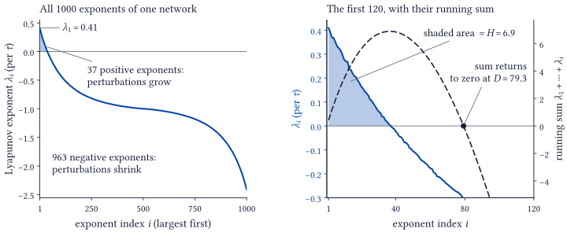
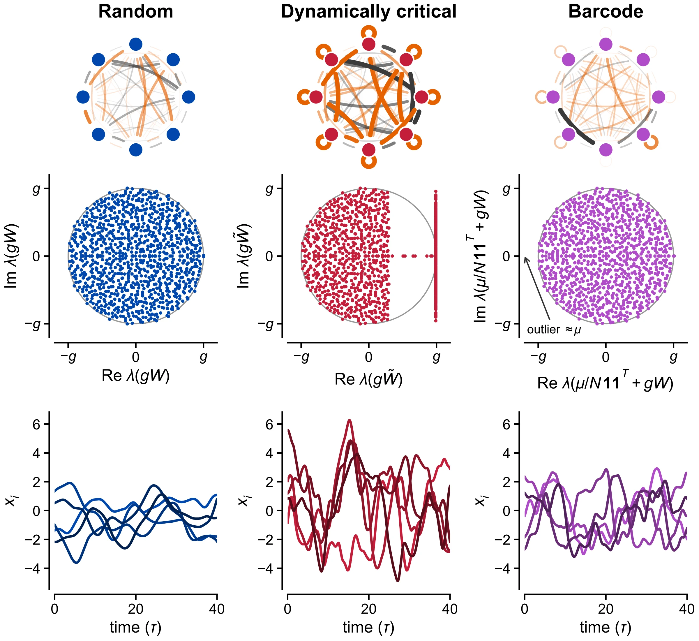
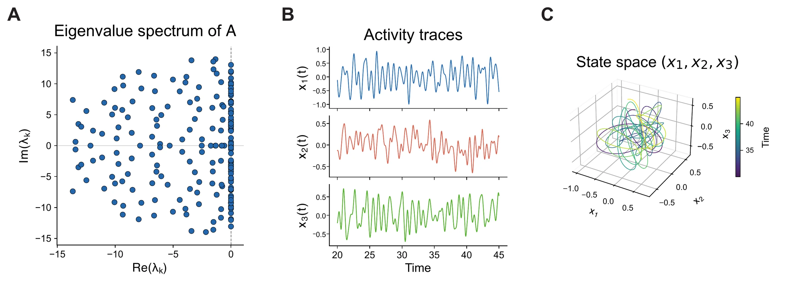
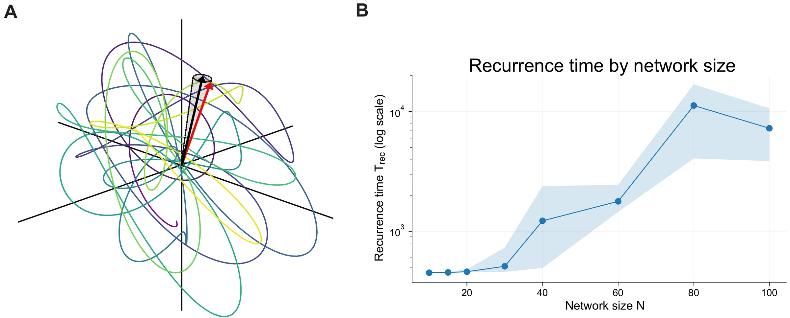
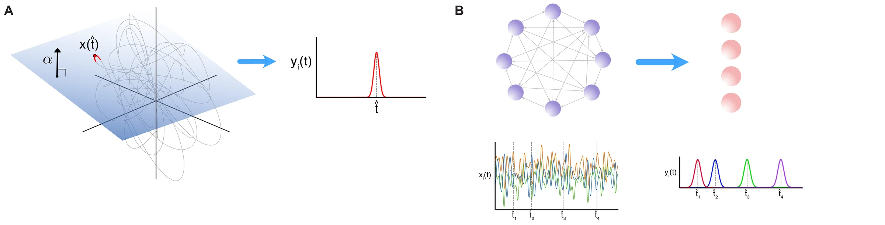
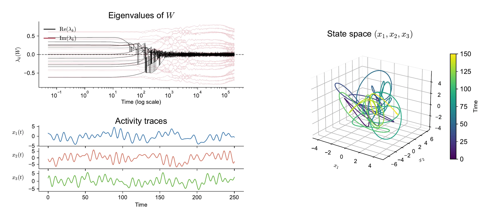

Lyapunov spectra of three recurrent network models
The units of a recurrent network drive one another. When the coupling is weak, activity dies away. When it is strong enough, the network keeps itself active with no input, and two almost identical starting states drift apart. That sensitivity to the starting state is chaos.
Reading a Lyapunov spectrum
A Lyapunov exponent is the average exponential rate at which a small perturbation grows or shrinks along one direction in state space. A network of N units has N of them, and sorted from largest to smallest they form its Lyapunov spectrum. I summarize a spectrum with three numbers:
- The largest exponent, λ1. If it is positive, the network is chaotic.
- The sum of the positive exponents, H, which estimates the entropy rate: how fast the dynamics produce new information.
- The Kaplan–Yorke dimension, D: how many exponents can be added, largest first, before the sum turns negative. It estimates the dimension of the set the activity settles onto.

How the exponents are computed
The method goes back to Benettin et al. (1980). Follow the network along its trajectory, and use its Jacobian to carry a set of small perturbation vectors along with it. Left alone, they would all swing toward the fastest-growing direction and grow or shrink without bound. So at regular intervals they are made perpendicular to one another again and rescaled to length one, and the logarithm of each length is recorded first. Averaged over time, those logarithms are the Lyapunov exponents. Making a set of vectors perpendicular, one after another, is a QR decomposition, which gives the method its name. My implementation follows Engelken et al. (2023).
Here is the same procedure with all 80 vectors at once, which gives the whole spectrum.
Three ways to build the network
The project compares three models, each chaotic for a different structural reason:
- Random. The classical network of Sompolinsky, Crisanti and Sommers (1988), used as the baseline.
- Dynamically critical. Random connectivity in which the 30% of eigenvalues with the largest real part are moved to a common real part just below one before the gain is applied, so a large group of modes reaches the stability boundary together.
- Barcode. The model of Fang et al. (2025): random connectivity with net inhibition, and a leak on every unit that grows with the network’s total activity.

For each model I have computed full spectra for networks of 20 to 2000 units, at gains from below the transition to deep in the chaotic regime: 21,150 runs, with 20 networks per condition (10 for the largest Barcode networks). The question is how λ1, H/N and D/N depend on the gain and on network size in each model, and whether structured connectivity or an activity-dependent leak changes that dependence relative to the random baseline. The analysis is under way, and I’ll add the comparison here when the write-up is done.
Sequence generation in dynamically critical networks
In a linear network dx/dt = Ax, I construct the connectivity so that many complex-conjugate eigenvalue pairs sit just left of the imaginary axis. Each pair contributes a slowly decaying oscillation. With incommensurate frequencies, their sum is quasiperiodic: it never exactly repeats.
To measure how long the activity takes to come back, I track the cosine similarity between the current state and the starting state. The recurrence time is the first moment it climbs back above a threshold. A downstream neuron with a rectified linear response can then fire at one particular moment, when the state lines up with its weights.
The same picture in my simulations, with connectivity built so that its spectrum hugs the imaginary axis:

In preliminary simulations, recurrence time grows rapidly with network size, because larger networks hold more near-critical modes.

I’m now testing how well banks of rectified linear readouts can decode these trajectories into sequences of timed pulses.

Networks that tune themselves
Criticality doesn’t have to be built by hand. Magnasco et al. (2009) showed that a local learning rule can drive a network’s eigenvalues to the stability boundary on its own. I reimplemented that model as a starting point for asking which computations this regime supports.

Learning dynamics from recordings
I’ve also applied dynamic mode decomposition, a data-driven method for learning linear dynamics from time series, to Neuropixels recordings from the Hanks Lab.